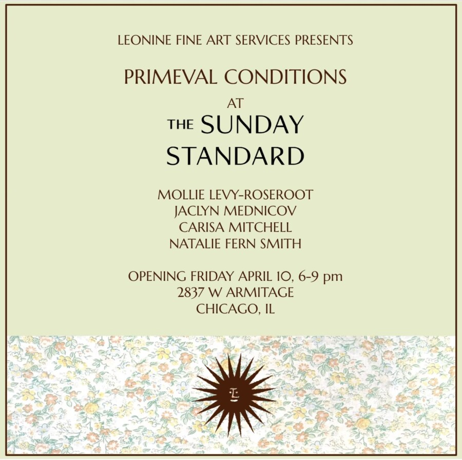

Primeval Conditions
“Beauty is a primeval phenomenon. It never makes an appearance itself, but is a visible reflection in a thousand different utterances of the creative mind. It is as various as nature herself.”
Johann Wolfgang Goethe
To celebrate the coming of spring and the flowering return of life, The Sunday Standard and Leonine Fine Art Services announce Primeval Conditions: an exhibition of four artists whose works call to the archaic human connection to love and beauty. Despite popular contemporary narratives, the works in this presentation demonstrate evidence that these early conditions are both elemental and alive as nature herself.
Primeval Conditions features the work of Chicago artists: Mollie Levy-Roseroot, Jaclyn Mednicov, Carisa Mitchell, and Natalie Fern Smith.
Friday April 10 from 6-9 pm at The Sunday Standard, 2837 W Armitage Ave, Chicago, IL 60647. We look forward to welcoming you there.